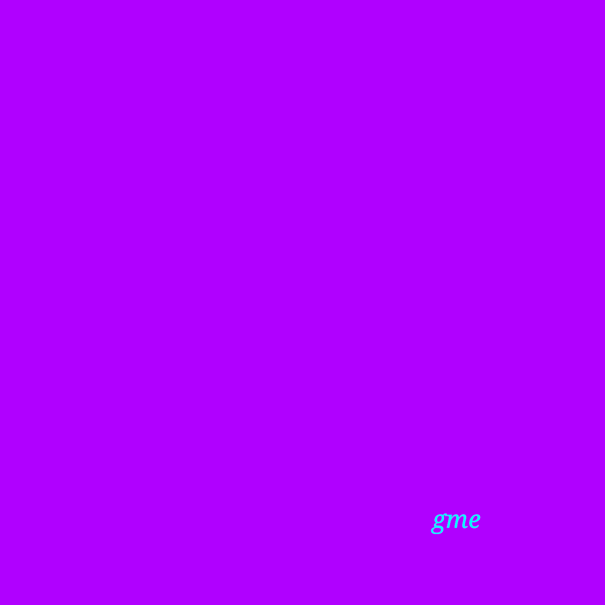

projects
[2022] frozen music --- one, a one part sound art work.

[2021-...] escarcelle, the feelings market is a personal exploration of the market concept in which the general public is invited to trade objects of sentimental value.

[2020 - ...] mouvements sous-jacents (in English, underlying movements) is a zine series on topics covering art and finance, whose goal is to detail the finartcialist project.

[2021] arrêt de jeu, a two-part sound art work.

[2021] STONKLY, an interactive webapp simulating a business dating game.

[2021] TTType, an esoteric pluging for programming.

[2020] the un coup de dés (du destin) game is an inversed Turing test in which the human player must hide amongst robots.
[2021] as for the mergers and acquisitions game, we don't know much more than this: reading the rules is somehow entertaining.

[2020] the album conditions initiales is the result of a sound art residency that took place at the artist' home during a quarantaine in 2020.

[2019] LuminX is a data visualisation project based on the exchange rate of 41 currencies against the euro, from 1999 to 2019.
artist' statement
things to ponder
Markets as an idea keeps coming back as a watermark to our stories. What are the markets mecanisms, the rules that are structuring them? What is underlying the exchanges taking place on the markets? What are we trading on them? Who is participating in them? What are the conditions that enables markets to exist, and which one helps making them successful?
And on top of everything, why should we trust markets? Are markets unavoidable?
What is the role of markets in our lives?
the project
These questions are at the root of my thoughts, feeding my desire to understand markets. I wish to center my practice around them, entering a process based on the creation of experiences and performances having a common goal of moving forward collective thoughts on the topic.
My proposition is to explore markets through arts, staging real and simulated markets, virtuals or physicals markets. In these sgaging, the market becomes a medium, a tool for creativity, a meaningful one.
artist' bio
I've studied mathematics with the goal of better understanding my own thoughts. These studies brought me to discover the multiplicity of logical systems, healing me from my ambition of being (sometimes) right.
After this, I was hopeful about finding a career that would take advantage of my conscientiousness, so I studied finance. I quickly figured out that my interests where elsewhere : I wanted to understand this complex universe in order to better explain it, and more than everything, I wanted to shine a light on what pushes us to always come back to the market mecanism in order to take a vast array of decisions.
contact
get in touch
To talk about the finartcialist project, write me an email: info@finartcialist.com
To know more about my other projects: eviau.net.
keep in touch
There are many ways to keep in touch with the project: